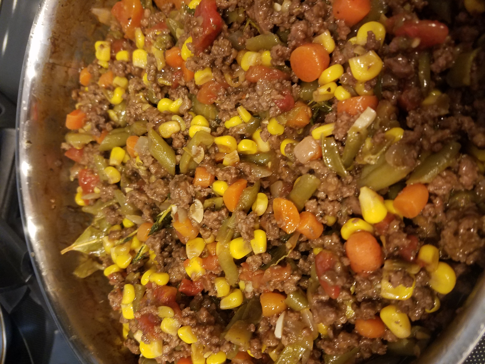

Farmer's Pie

This recipe makes 2 large pans (9 x 13 and at least 3 inches deep). I make one to eat that night and freeze the other one for an easy meal another night.
Ingredients for Mash
- 4 large sweet potatoes, chopped
- ½ cup heavy cream
- 4 Tbsp butter
- 1 Tbsp fresh rosemary, chopped
- 1 head of garlic, roasted (I cut to top off the entire head, remove all the extra paper-y outside, drizzle with olive oil, wrap in foil, the bake at 400 for about 45 minutes)
- 1 tsp fresh ground pink salt
- 1 tsp fresh ground pepper
Ingredients for Filling
- 1.5 lb ground beef (would also be great with ground lamb)
- 2 Tbsp Olive Oil
- 1 sweet onion, finely chopped
- 1.5 cups diced carrots
- 1 can cut green beans (drained)
- 1 can sweet corn (drained)
- 1 can diced tomatoes
- 2 cloves of garlic, finely chopped
- 3 Tbsp flour
- 1 cup red wine (I used Apothic Inferno because it was aged in whisky barrels)
- 1 - 1.5 cups beef stock
- 3-4 Tbsp Worcestershire sauce
- 3-4 sprigs of thyme
- 2 bay leaves
Method
- Brown the meat. Set drained meat aside and discard the grease.
- Put the oil into the pan, add the vegetables and cook on a gentle heat until soft, about 20 mins.
- Add the garlic and flour, increase the heat and cook for a few mins, then return the beef to the pan.
- Pour over the wine, if using, and boil to reduce it slightly before adding the stock, Worcestershire sauce and herbs.
- Bring to a simmer and cook, uncovered, for 45 mins. By this time the gravy should be thick and coating the meat. Check after about 30 mins - if a lot of liquid remains, increase the heat slightly to reduce the gravy a little. Season well, then discard the bay leaves and thyme stalks.
- Meanwhile, make the mash. In a large saucepan, cover the potatoes in cold water, bring to the boil and simmer until tender.
- Drain well, then allow to steam-dry for a few mins. Mash well with the cream, butter, and seasons.
- Spoon meat into 2 ovenproof dishes. Pipe or spoon on the mash to cover. Heat oven to 350° and cook for 25-30 mins, or until the gravy is bubbling.